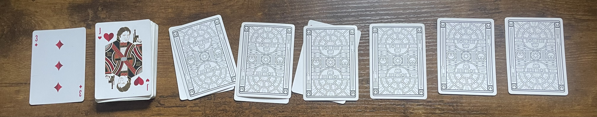

Drinking Games: Riding the Bus
Introduction
Games of chance have a long and varied history, with evidence of such activities dating back to ancient civilizations.
This ancient Greek game Astragaloi or Knucklebones involved throwing small bones (knucklebones or astragaloi) and using the side that landed facing up for scoring. The game had various versions and was played for both fun and gambling.
An ancient Mesopotamian board game The Royal Game of Ur, also known as the Game of Twenty Squares, dates back to around 2600 BCE. It involved a race between two players, and the movement of pieces was determined by the casting of four-sided dice. Some believe that the game had a religious significance.
Gambling with dice was common during the medieval and Renaissance periods. Games like Hazard, a precursor to modern craps, were popular. Dice were often made from bone or ivory, and various forms of gambling were associated with them.
Lotteries became popular in Industrial societies. While lotteries have a much longer history, they gained prominence during the 18th century in Europe and North America. Governments used lotteries to raise funds for public projects, and people purchased tickets for a chance to win prizes.
The modern version of the roulette wheel, a popular casino game of chance, was developed in 18th-century France. It has since become a classic in casino gambling.
Games of chance evolved over time, reflecting cultural changes and technological advancements. While the specific games may vary, the concept of taking a risk for the chance of gaining something of value has persisted across centuries and civilizations.
Today’s youth commonly uses card games at parties to play drinking games. Instead of monetary wagers we wager sips of beverages. F the Dealer, Kings cup, and many other games are extremely popular. With my friends, Ride the Bus is the most common choice.
The game consists of three phases, and has many variations. In this article I looked at the last phase of the game to understand the distribution of game outcomes, and amount of drinks a sore loser has to consume.
Why do this?
As with any game of chance, your strategy contributes to the likelihood of success, but randomness still has a role to play. Before we get into how the game works, I will tell you that I witnessed a FRIEND OF MINE WHO SHALL NOT BE NAMED go through the deck of cards multiple times, making about 40 decisions before he successfully finished the game. Afterwards, other people finished their ride of the bus in a much, MUCH, smaller number of steps.
This crazy variance of a few data points sparked my interest in this little simulation case study.
How the Game Works
A working example
As I mentioned earlier, the game consists of multiple phases, but we focus on the last part, where one player is playing against the dealer. While many variations of the game exist, we usually base our play with a small number of simple rules.
The game between a dealer and player begins with a 52-card deck. We begin by laying out six cards face down and revealing one card to the player. Example of the setup is given in Figure 1
The game begins with a player deciding if the next card to the right is higher or lower than the last card a player saw. A player will announce their choice to the dealer before flipping th card. If the player guesses correctly, the game continues, and another higher/lower choice is made. The game goes on until the player gets 6 correct guesses in a row. Suits play no role in this version of the game.
For example, with the same staring point of ‘three of clubs’ as a starting point, a player might get to a point in a game displayed in Figure 2. The first choice would be ‘higher than three’, which would reveal ‘nine’. Next, a player might say ‘lower’, which would be a correct guess when ‘six’ is revealed. ‘Six’ is a lower card in the ‘two-to-ace’ deck, so a good guess may be to go higher. This would be a faulty guess when we reveal a ‘two’.
This choice would prompt the game to restart.
An example of a restart is shown in Figure 3. We discarded previous starting point, which was a ‘three of clubs’, we deal three more cards for the three cards that we revealed. And then the last, fourth, card would be a Jack.
Because the player failed at the third guess, a player need to take three drinks/sips of their beverage. A ligher bevarege is recommended for this game, for obvious reasons.

Summary of the game rules
Bullet points below summarize the rules of the game.
Starting point: deal six cards and reveal one on top of the deck to begin guessing
At each step guess if the next (unknown) card is higher or lower than the last one
If the guess is correct, we move one, a make a new guess based on the card we just revealed
If we guess wrong, we count the number of guesses we make in the sequence. This is how many small drinks/sips a player needs to do before the next round starts.
The goal of the game is to make six correct guesses in a row
Analysis
Goal
As outlined above, the game end and a player wins when they make six correct guesses in a row. The goal of my analysis is to obtain a distribution for the number of attempts until a player gets six in a row.
Strategies
We debated many version of the best strategy for this game, and maybe all of them will be studied one day. Today, we consider three strategies.
Total Randomness: a horrible strategy where you guess higher or lower a random at each step. Nobody plays like this. I just want to know how bad one might be able to do in this game.
Simple: based on one rule a player might want to stick with:
For example, in a deck of cards with 2, 3, 4, 5, 6, 7, 8, 9, 10, J, Q, K, A (Ace is high) we might pick 7 or 8 as a natural midpoint
For my analysis, I pick 7 as a midpoint. So, if the last card is higher than ‘7’, you always say than the next card is lower. For example, if you play against the last card ‘9’, you guess that the next card is lower.
This strategy seems robust, but it ignores information that has been revealed as the game goes on.
The card counter: this strategy is based on an assumption that you could potentially remember cards that were already dealt, and cards that are still in the deck.
Suppose a ‘7’ was revealed. Hypothetically, you may count the number of cards that are still not revealed that are higher and lower than ‘7’. If more cards are left to play that are higher than ‘7’, you make this guess.
This strategy can be good at the extremes of dealt cards, like ‘2’, ‘3’, or ‘Q’, ‘K’, ‘A’, but is more of a 50/50 guess when the cards are towards the middle of the order.
Also, this strategy may be better as more and more cards are revealed
Results
To compare strategies, I ran 100,000 games for each strategy. To make things equal and account for deck specific factors, I applied each strategy to the same deck of cards. Results are given in Table 1
| Strategy | Average # Attempts | Median # Attempts | 25th Quantile | 75th Quantile | % Finished on First Try | % Finished on 10+ Tries | Max # Attempts |
|---|---|---|---|---|---|---|---|
| Random | 62.9 | 44 | 18 | 87 | 3.1% | 85.56% | 791 |
| Simple | 5.8 | 4 | 1 | 8 | 27.54% | 19.55% | 70 |
| Counting | 5.7 | 4 | 1 | 8 | 28.17% | 19.16% | 62 |
Biggest shock to me was the fact that all summary statistics for a simpler strategy with 1 rule and a card counting strategy are similar. It means that following a simple rule can help you do just as good as a professional card counter.
It was also interesting to see that about quarter of all games finish in 1 go
- in my personal experience, this event is more rare
- it may suggest my friends need a better strategy))
The variance and skewness of of this distribution is quite high, which is dictated by the shape of distributions, see Figure 4
If you play at random and have no strategy you might need to see a doctor at the end of the night